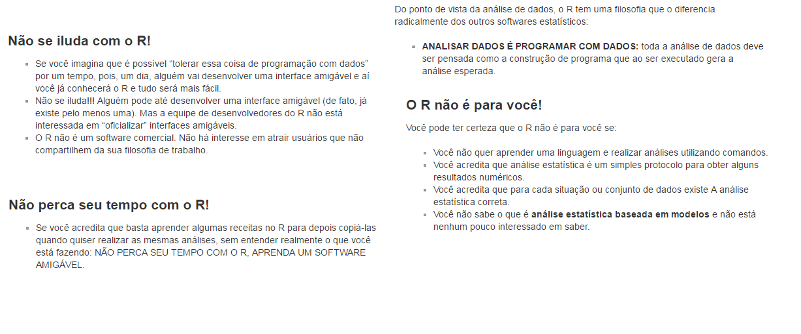
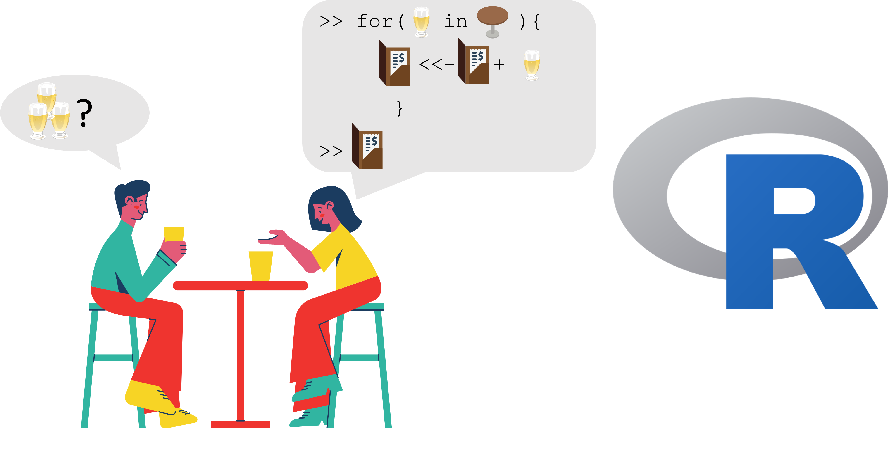
Um pouco da história…
“R has now outgrown its origins and its
development is now a collaborative effort
undertaken using the Internet to exchange ideas
and distribute the results.”
Ross Ihaka
Diga ao R para fazer…
O R consegue fazer alguma coisa?
Não, o R é uma linguagem!
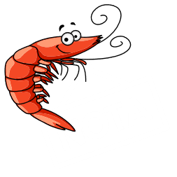
Precisamos aprender a linguagem R para nos comunicar em R
O erro em um comando origina uma mensagem de “Erro”
Lembre-se: você é capaz de aprender. O computador é simples e rápido, mas não aprende…
Error in…
Warning message:
In data(crabs) : data set ‘crabs’ not found
Warning message:
In mean.default(crabs) : argumento não é numérico nem lógico: retornando NA
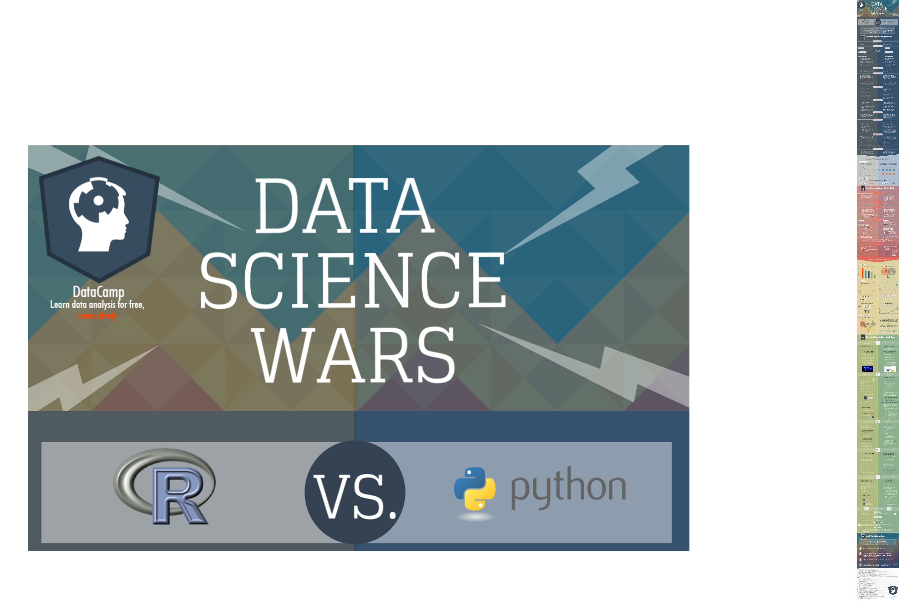
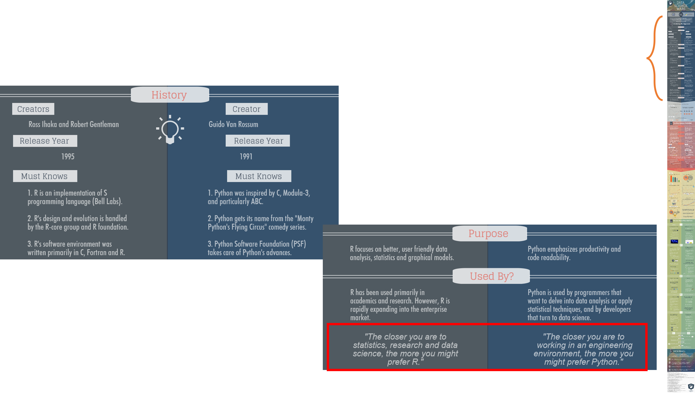
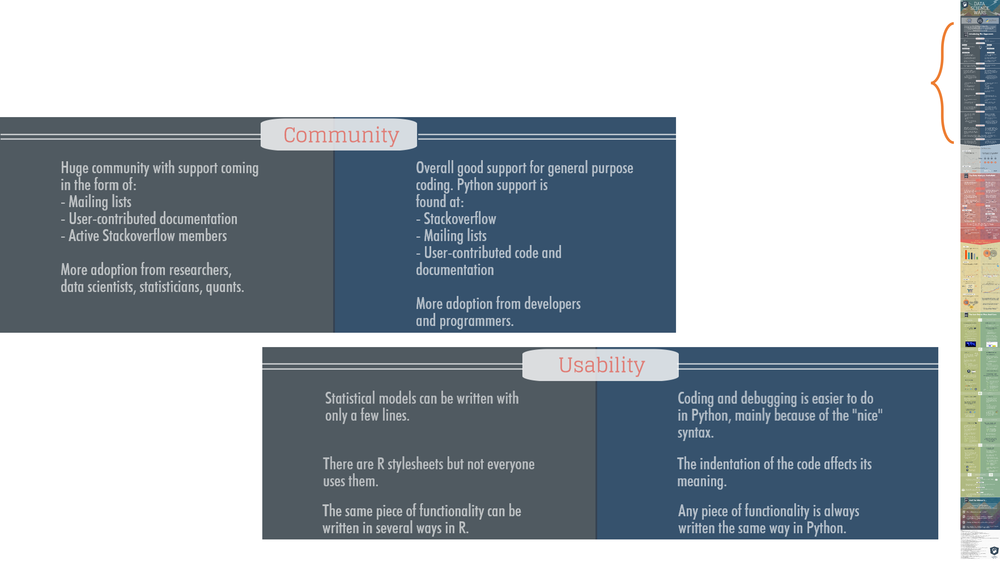
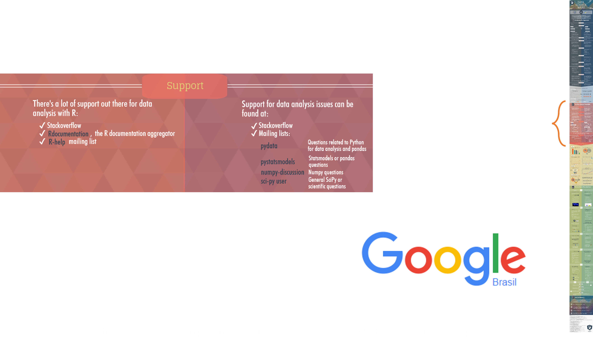
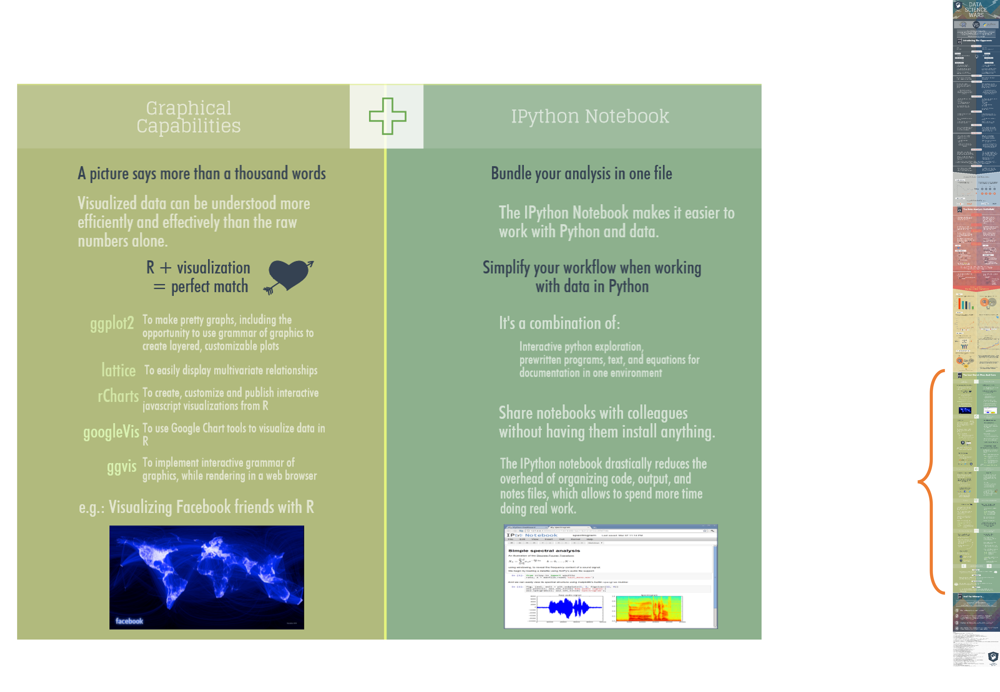
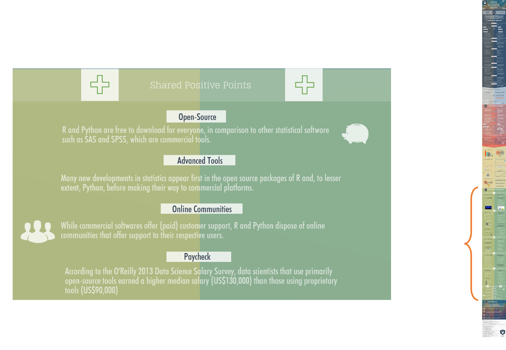
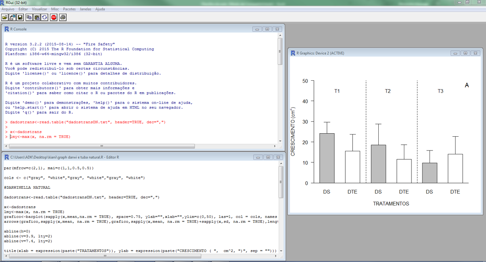
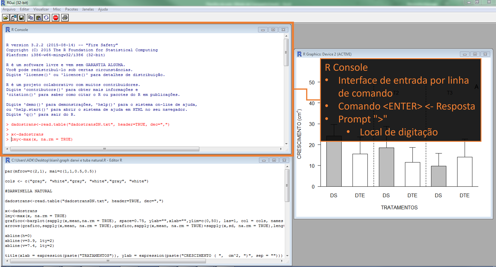
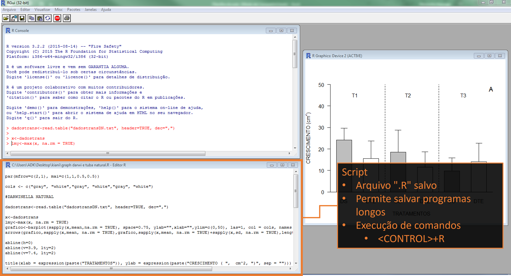
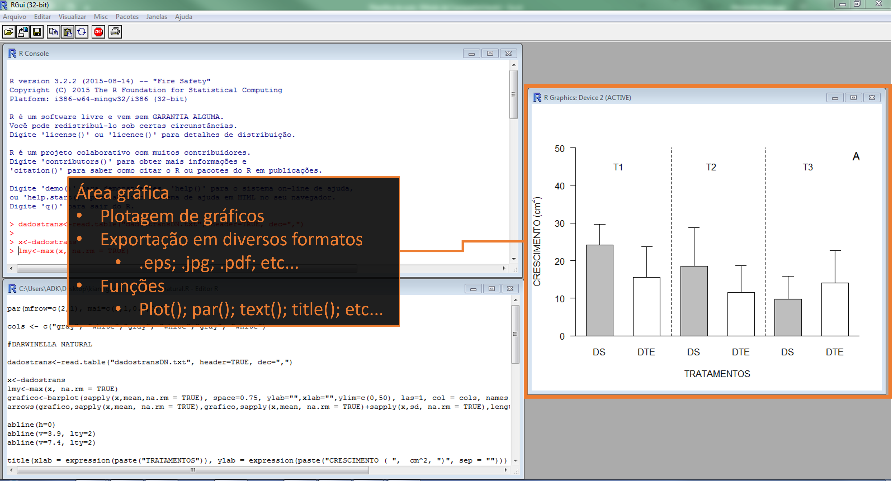
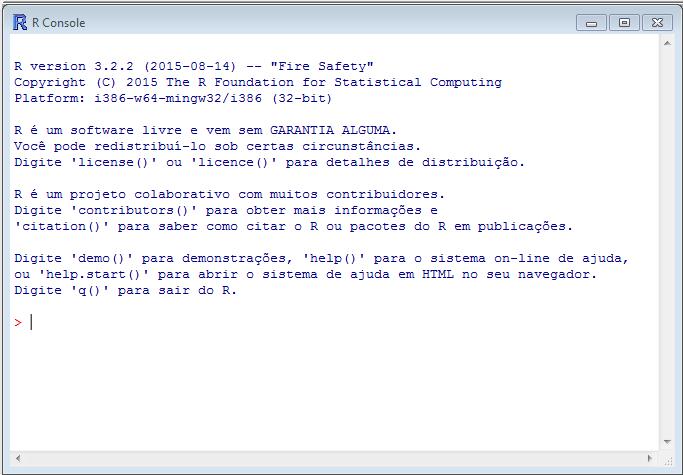
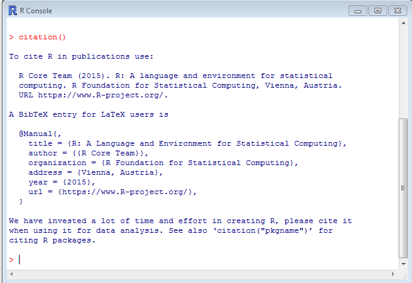
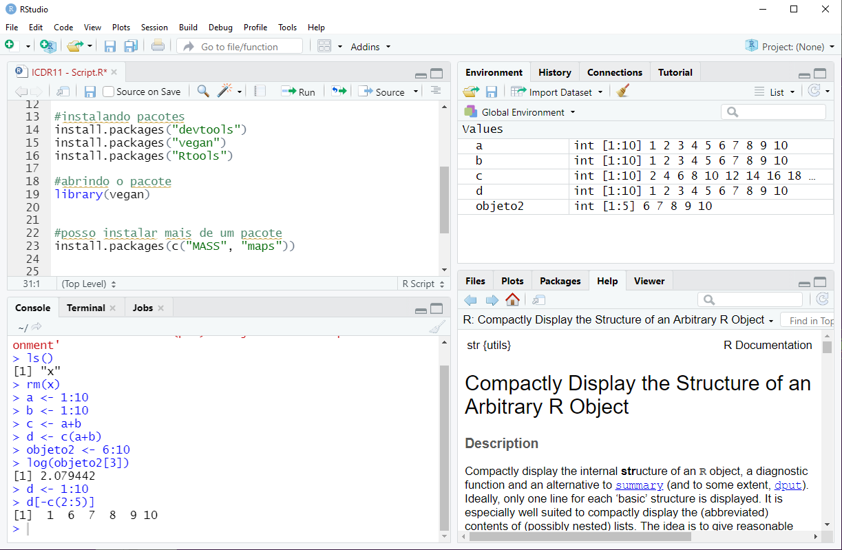
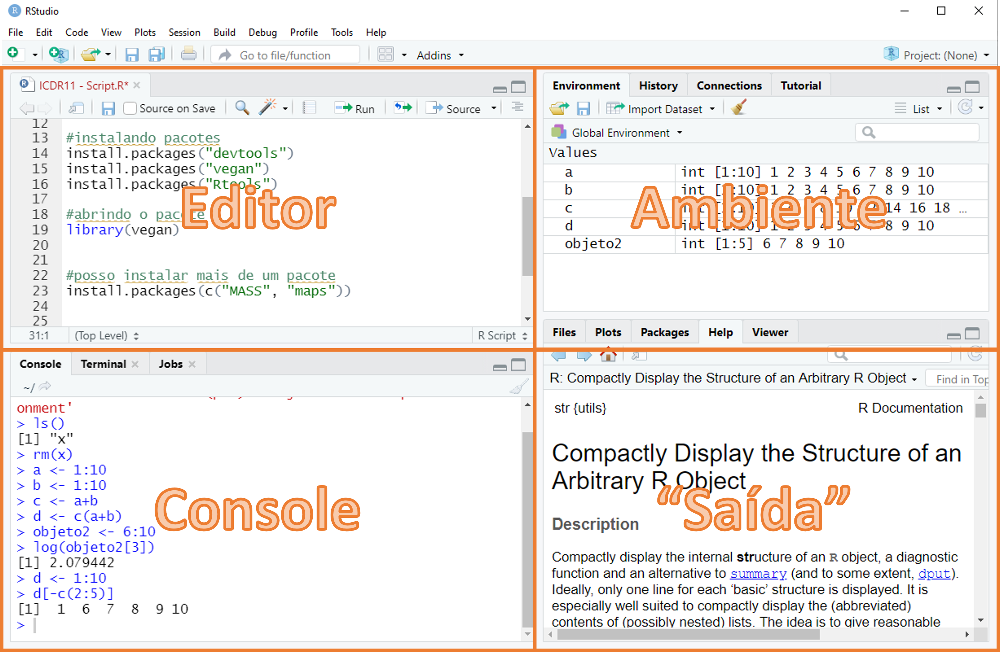
O uso de atalhos ajuda muito a fluidez do trabalho
CTRL+ENTER: roda a linha selecionada no script. MUITO USADO
ALT+-: (<-) sinal de atribuição. MUITO USADO
CTRL+SHIFT+M: (%>%) operador pipe.
CTRL+1: altera cursor para o script.
CTRL+2: altera cursor para o console.
CTRL+SHIFT+C: (Des)comenta a linha.
CTRL+SHIFT+R: Cria um comentário para uma nova parte do código.
ALT+SHIFT+K: janela com todos os atalhos disponíveis
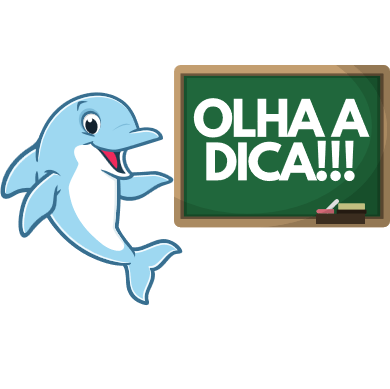